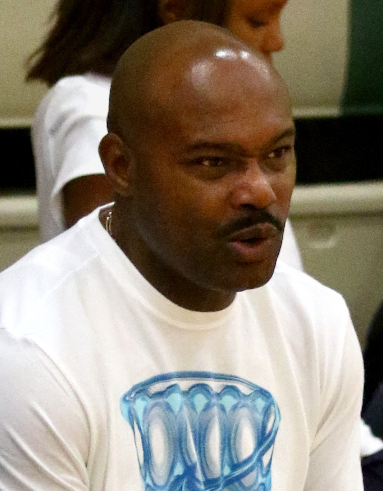

Tim Hardaway
The T in Run TMC, the UTEP two step, and the reason a whole generation of Bay Area kids tried a crossover in the driveway.
The Tim Hardaway Story
Timothy Duane Hardaway was born on September 1, 1966, in Chicago and graduated from Carver Area High School in 1985. In 2022 Carver retired his jersey.
He played college ball at UTEP for Don Haskins, a Hall of Famer himself. The Miners made the NCAA Tournament all four years, and Hardaway won the 1989 Frances Pomeroy Naismith Award as the best player in the country at six feet or under, plus WAC Player of the Year. That's also where he built the crossover TV guys started calling the UTEP two step.
The Warriors took him 14th in the 1989 draft. Don Nelson loved to tell it his way, and Hardaway told it in Springfield: Nellie lied to every team and said his knees were shot so he'd still be there at 14. As a rookie he wore number 5, because Manute Bol had 10, and he made the NBA All Rookie first team.
With Chris Mullin and Mitch Richmond he made up the trio the San Francisco Examiner's readers named Run TMC, after Run DMC. Hardaway ran the break. Golden State led the NBA in scoring in 1989/90, opened 1990/91 by beating Denver 162 to 158, the highest scoring regulation game in league history, and sold out every home game that season.
That year Mullin, Richmond and Hardaway averaged 72.5 points a game between them, the most of any trio in the league. Hardaway made his first All Star team. As a 7 seed the Warriors knocked off David Robinson's Spurs, then stole Game 2 in Los Angeles before Magic Johnson's Lakers won the series in five. Hardaway averaged 26.8 points, 12.8 assists and 3.8 steals against them.
On November 1, 1991, Nelson traded Richmond to Sacramento for Billy Owens and Run TMC was done. Nelson said years later he'd never make that trade again. Hardaway just got better: 23.4 points and 10.0 assists a game in 1991/92, All NBA second team, and 55 wins. The next year he averaged 21.5 points and a career high 10.6 assists and made his third straight All Star team.
Then he tore a ligament in his left knee and missed the whole 1993/94 season, and his spot on Dream Team II with it. He came back with 20.1 points a game in 1994/95, but in the middle of the 1995/96 season the Warriors traded him to Miami with Chris Gatling for Kevin Willis and Bimbo Coles.
He left with 8,337 points and 3,926 assists in 422 games as a Warrior. He'd reached 5,000 points and 2,500 assists in 262 games, faster than anybody in NBA history except Oscar Robertson. He also owns one of the strangest lines ever: 0 for 17 from the field on December 27, 1991, in a 106 to 102 win over Minnesota.
In Miami he was even better. First team All NBA in 1997, fourth in the MVP voting, 38 points in a Game 7 against the Knicks, two more All Star Games, and the Heat retired his number 10 in 2009. In 2000 he won Olympic gold in Sydney. He finished up with Dallas, Denver and Indiana and retired in 2003.
In February 2007 Hardaway said on a Miami radio show that he hated gay people. The NBA pulled him from its All Star weekend events, he apologized, and he later said he had no idea how much he'd hurt people. In 2013 he called Jason Collins to support him when Collins came out, and he was the symbolic first signer of a petition to put marriage equality on the ballot in Florida.
On September 10, 2022, he was enshrined in the Naismith Memorial Basketball Hall of Fame. Mullin and Richmond, already in, were seated right next to him on the stage, and the three members of Run TMC were all in the Hall together at last.
What He Meant to Us
Run TMC was the most fun basketball team I've ever watched, and I've watched the Curry Warriors. Hardaway was the one who made it go. Mullin was the shooter and Richmond was the muscle, but every one of those fast breaks started with Tim pushing it up the floor and somebody's ankles going the wrong way.
That crossover was the coolest thing in the Bay Area. Every kid at every park in Oakland tried it, and every one of us fell down. He was six feet tall and he played like he was the biggest guy on the court.
I'll always be mad they broke it up. Richmond traded for Billy Owens, then the knee, then Miami. Nellie said he'd never make that trade again, and I believe him, but that doesn't get those years back. We got two seasons of Run TMC and spent thirty years wishing for more.
He said some ugly things in 2007, and I'm not going to pretend he didn't. He owned it and he did the work after. And when he stood up in Springfield with Mully and Rock sitting next to him and said they were ahead of their time, he was right.
Why He Was Clutch
The 1991 playoffs were Hardaway's coming out party. The Warriors were the 7 seed and beat the 2 seed Spurs, and he closed it out with 32 points in Game 4 at home.
Two games later, in Game 2 at the Forum, he had 28 points, 14 assists and 8 steals in a 125 to 124 win over Magic's Lakers. Those 8 steals are still tied for the second most in a playoff game in NBA history.
He kept it up when everybody knew the Warriors were outgunned. In Game 5 in Los Angeles, facing elimination, he played 51 minutes, scored 27 and handed out 20 assists before the Lakers won in overtime. In 13 playoff games as a Warrior he averaged 25 points and 10 assists.
Clutch Moments
- 1990 season
All Rookie
Wearing number 5, Hardaway averaged 14.7 points and 8.7 assists, started 78 games and made the NBA All Rookie first team as Golden State led the league in scoring.
- May 3, 1991
Closing out the Spurs
The 7 seed Warriors finished off David Robinson and the 2 seed Spurs 110 to 97 at home, and Hardaway led the way with 32 points and 9 assists.
- May 8, 1991
Eight steals at the Forum
In Game 2 of the second round, Hardaway had 28 points, 14 assists and 8 steals as the Warriors beat the Lakers 125 to 124 in Los Angeles.
- May 14, 1991
Twenty assists with the season on the line
Down 3 to 1, Hardaway played 51 minutes in Game 5 and put up 27 points and 20 assists. The Lakers won 124 to 119 in overtime, but nobody could say he didn't empty the tank.
- 1991/92 season
Twenty and ten
After Richmond was traded, Hardaway averaged 23.4 points and 10.0 assists, made All NBA second team, and the Warriors won 55 games. He became the seventh player ever to average 20 and 10 in a season, and did it again the next year.
- April 30, 1992
Eight more steals
In Game 4 of the first round at Seattle, Hardaway had 27 points, 11 assists and 8 steals in a 119 to 116 loss, his second 8 steal playoff game in two years.
- September 10, 2022
Springfield
Hardaway was enshrined in the Naismith Memorial Basketball Hall of Fame with Mullin and Richmond seated beside him, and called Run TMC legendary.
The Highlights
What They Said About Hardaway
“Chris Mullin and Mitch Richmond. Run TMC. Legendary, baby. We were legendary,”
“And Run TMC, man, we were ahead of our time. Chris, Mitch, you will always be family to me.”
“He lied to every team and said my knees were shot so I would fall to the Warriors with the 14th pick and he drafted me. Great job Nellie. I appreciate you.”
“I'd never make that trade again,”
“the most fun I had playing basketball in my whole life”
Career Stats
| Year | Team | G | MP | PTS | REB | AST | STL | BLK | FG% | 3P% | FT% |
|---|---|---|---|---|---|---|---|---|---|---|---|
| 1989/90 | GS | 79 | 33.7 | 14.7 | 3.9 | 8.7 | 2.1 | 0.2 | .471 | .274 | .764 |
| 1990/91 | GS | 82 | 39.2 | 22.9 | 4.0 | 9.7 | 2.6 | 0.1 | .476 | .385 | .803 |
| 1991/92 | GS | 81 | 41.1 | 23.4 | 3.8 | 10.0 | 2.0 | 0.2 | .461 | .338 | .766 |
| 1992/93 | GS | 66 | 39.5 | 21.5 | 4.0 | 10.6 | 1.8 | 0.2 | .447 | .330 | .744 |
| 1994/95 | GS | 62 | 37.4 | 20.1 | 3.1 | 9.3 | 1.4 | 0.2 | .427 | .378 | .760 |
| 1995/96 | GS | 52 | 28.6 | 14.1 | 2.5 | 6.9 | 1.4 | 0.2 | .421 | .366 | .769 |
| 1995/96 | MIA | 28 | 37.4 | 17.2 | 3.5 | 10.0 | 2.1 | 0.2 | .425 | .361 | .821 |
| 1996/97 | MIA | 81 | 38.7 | 20.3 | 3.4 | 8.6 | 1.9 | 0.1 | .415 | .344 | .799 |
| 1997/98 | MIA | 81 | 37.4 | 18.9 | 3.7 | 8.3 | 1.7 | 0.2 | .431 | .351 | .781 |
| 1998/99 | MIA | 48 | 36.9 | 17.4 | 3.2 | 7.3 | 1.2 | 0.1 | .400 | .360 | .812 |
| 1999/00 | MIA | 52 | 32.2 | 13.4 | 2.9 | 7.4 | 0.9 | 0.1 | .386 | .367 | .827 |
| 2000/01 | MIA | 77 | 33.9 | 14.9 | 2.6 | 6.3 | 1.2 | 0.1 | .392 | .366 | .801 |
| 2001/02 | DAL | 54 | 23.6 | 9.6 | 1.8 | 3.7 | 0.7 | 0.1 | .362 | .341 | .833 |
| 2001/02 | DEN | 14 | 23.2 | 9.6 | 1.9 | 5.5 | 1.2 | 0.1 | .373 | .373 | .632 |
| 2002/03 | IND | 10 | 12.7 | 4.9 | 1.5 | 2.4 | 0.9 | 0.0 | .367 | .355 | .500 |
| Career | 867 | 35.3 | 17.7 | 3.3 | 8.2 | 1.6 | 0.1 | .431 | .355 | .782 |
Per game averages except G. Missed all of 1993/94 with a torn knee ligament. Split 1995/96 between Golden State and Miami, and 2001/02 between Dallas and Denver. Warriors only, 422 games: 19.8 points, 9.3 assists, 1.9 steals. Scroll the table sideways on a phone.
Playoffs, per game
| Year | Team | G | MP | PTS | REB | AST | STL | BLK | FG% | 3P% | FT% |
|---|---|---|---|---|---|---|---|---|---|---|---|
| 1990/91 | GS | 9 | 44.0 | 25.2 | 3.7 | 11.2 | 3.1 | 0.8 | .486 | .354 | .789 |
| 1991/92 | GS | 4 | 44.0 | 24.5 | 3.8 | 7.3 | 3.3 | 0.0 | .400 | .345 | .649 |
| 1995/96 | MIA | 3 | 36.7 | 17.7 | 1.7 | 5.7 | 1.0 | 0.0 | .465 | .364 | .714 |
| 1996/97 | MIA | 17 | 41.2 | 18.7 | 4.1 | 7.0 | 1.6 | 0.1 | .359 | .313 | .795 |
| 1997/98 | MIA | 5 | 44.4 | 26.0 | 3.4 | 6.6 | 1.2 | 0.0 | .447 | .436 | .784 |
| 1998/99 | MIA | 5 | 36.4 | 9.0 | 2.8 | 6.4 | 1.0 | 0.2 | .268 | .200 | .625 |
| 1999/00 | MIA | 7 | 26.0 | 7.7 | 2.1 | 4.7 | 0.7 | 0.0 | .294 | .206 | .700 |
| 2000/01 | MIA | 2 | 18.0 | 2.5 | 1.0 | 4.5 | 0.0 | 0.0 | .222 | .333 | |
| 2002/03 | IND | 4 | 11.8 | 3.3 | 0.5 | 2.3 | 0.3 | 0.0 | .333 | .300 | |
| Career | 56 | 36.6 | 16.8 | 3.1 | 6.8 | 1.6 | 0.2 | .393 | .320 | .751 |
Tim Hardaway: Fast Facts
What years was Tim Hardaway with the Golden State Warriors?
Tim Hardaway was with the Golden State Warriors from 1989 to 1996 as a point guard.
What number did Tim Hardaway wear?
Tim Hardaway wore numbers 5, 10.
What are Tim Hardaway's signature numbers?
3,926 assists as a Warrior, third in franchise history; 72.5 points a game by Run TMC in 1990/91, the most of any NBA trio; 23.4 points a game in 1991/92, with 10.0 assists; 262 games to reach 5,000 points and 2,500 assists, second fastest ever.
What were Tim Hardaway's biggest honors?
Naismith Memorial Basketball Hall of Fame (2022); 5x NBA All Star (1991, 1992, 1993, 1997, 1998); All NBA First Team (1997); 3x All NBA Second Team (1992, 1998, 1999); All NBA Third Team (1993).
What are some of Hardaway's biggest moments?
All Rookie (1990 season); Closing out the Spurs (May 3, 1991); Eight steals at the Forum (May 8, 1991). Every one is in the Clutch Moments section above.